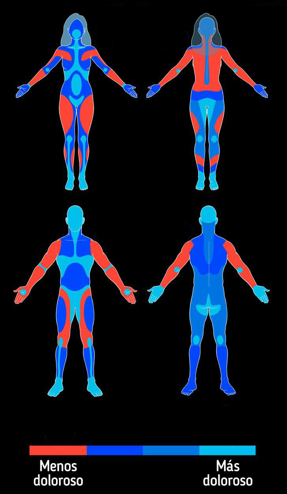

Puede ser de cualquier parte del cuerpo mientras se vea la totalidad de la seccion a tatuar
La imagen es para que el artista pueda ver la zona de la piel donde se va a realizar el tatuaje ,si hay tatuajes previos o lunares y el espacio con el que cuenta en las siguientes imagenes estan los ejemplos:
La foto debe ser tomada desde una distancia considerable para que se vea el brazo completo
Puede ser de cualquier parte del cuerpo mientras se vea la totalidad de la seccion a tatuar
Es importante ya que nos da la idea de que tipo de piel vamos a tatuar, sobre que superficie y como se adecua a nuestro diseño
Las imagenes son ilustrativas , las medidas se toman en cm para que el artista pueda saber que tamaño es el que tiene que ocupar en las siguientes imagenes te mostramos como medir un tatuaje a lo ancho , y a lo alto utilizando una regla:
Las medidas en cm influyen el en precio y depende del tamaño muchas veces tambien del estilo pero mientras mas informacion tengamos mejor va ser la cotizacion
Las medidas se toman a lo alto y a lo ancho del diseño en relacion a la referencia enviada ,tambien los tatuajes alrededor o marcas influyen en el resultado del tatuaje
Este mapa sobre la sensibilidad de la piel en las zonas donde pueden estar tus tatuajes te preparan para saber a que te vas a enfrentar ..animos!
